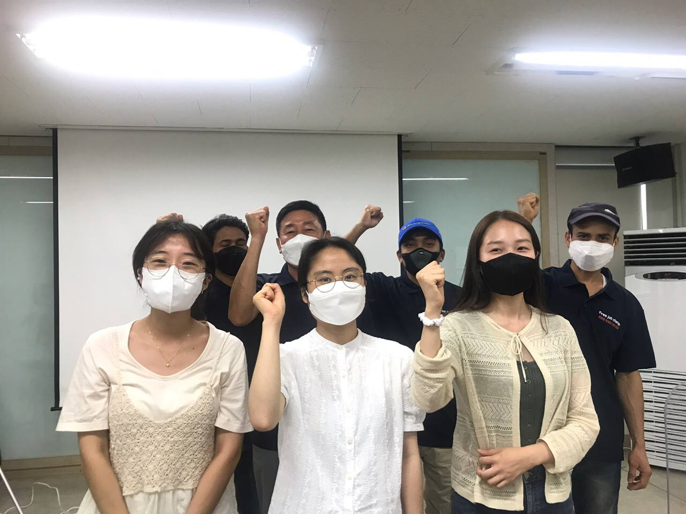
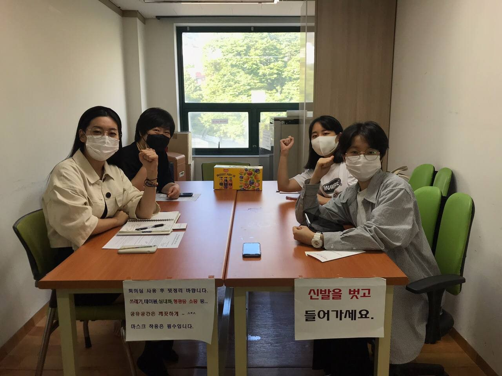

<웹사이트 및 캠페인 소개>
우리는 '이주노동자 사업장 이동의 자유 촉구 캠페인'의 캠페이너로서 한국의 이주노동자가 대부분의 시간을 할애하는 사업장, 숙소에서부터 드러나는 인권 침해를 보았습니다. 이에 가장 큰 이유로 고용허가제 하의 사업장 변경 제한을 꼽습니다. 현재의 고용허가제는 이주노동자의 열악한 노동조건과 거주공간을 개선할 수 없을 뿐만 아니라 이들에 대한 차별과 배제를 심화합니다. 따라서 이주노동자가 사업장을 선택할 수 있는 권리가 보장되는 노동허가제로 변화해야 합니다.
모든 노동자는 자신이 일할 사업장을 선택할 권리가 있습니다. 우리는 이러한 부당한 현실을 알리기 위한 인터뷰 활동, 칼럼 작성, 고용허가제 위헌판결 촉구 기자회견 및 이주노동자 증언대회 참석, 서명운동과 각종 활동을 위한 홍보 카드뉴스 제작, 그리고 이 웹사이트를 개설하였습니다. 그간의 활동은 다음 화면을 참고해주시기 바랍니다.
●이주노동자의 권리보장을 위한 서명운동에 동참하고 싶다면?
☞https://bit.ly/3dQxrlz : 사업장 변경 자유 보장 서명운동
●이주노동자의 현실을 말하는 인터뷰 내용이 궁금하다면?
|  |  |
①https://brunch.co.kr/@stulink/9 : 이주노동자와의 인터뷰
②https://brunch.co.kr/@stulink/10 : 이주노동운동 활동가와의 인터뷰
●우리 모두의 권리를 위해 갖춰야 할 자세가 궁금하다면?
☞[이주노동자가 위험하다 ⑤] 인간의 권리, 모두의 연대 : 우리의 미래로 가는 길
http://www.labortoday.co.kr/news/articleView.html?idxno=204452
* 이야기 속의 룸메이트가 선배를 만나기 위해 찾아간 곳은 '이주노동자 노동조합'입니다. 실제로 이주노조에 가입한 이주노동자들은 고용허가제의 문제를 인식하고, 해결을 위한 움직임을 꾸준히 하고 있습니다. 이주노동자의 권리 및 인권 신장을 위한 투쟁과 단결에 관심이 있는 분들은 이주노조에 가입하셔서 함께하실 수 있습니다.
1. 이주노조 홈페이지 링크 : http://mtu.or.kr/
2. 위치 : 서울시 은평구 통일로684, 민주노총 서울본부 2층 이주노동자 노동조합
3. 전화번호 : Tel. 02-2285-6068
전국학생행진에서 주최한 '이주노동자 사업장 이동의 자유 촉구 캠페인' 활동에
도움을 주신 기관의 후원계좌를 알려 드립니다.
●이주노동자노동조합 http://mtu.or.kr/
NH농협은행 301-0233-0891-21
( 예금주 : 이주노동자노동조합 )
●이주노동희망센터 http://ijunodong.org/
국민은행 778801-04-376001
( 예금주 : 사단법인 이주노동 희망센터 )
●용산나눔의집 http://ysnanum.or.kr/
우리은행 1005-001-721747
( 예금주 : 용산나눔의집 사무국 )
주관
도움
이주노동자평등연대
이주노동자노동조합
사진 출처
이주노동자기숙사산재사망대책위, 이주노동자 기숙사 사진전
글 : 윤지수 그림 : 안소이 개발 : 김윤범
[안내 말씀]
당신은 잠시나마 한국의 '이주노동자'로 살아보았습니다. 어떠셨나요?
앞에서 보신 것처럼 현재 이주노동자는 '고용허가제'에 의해 부당한 노동환경에 놓여있습니다.
그 이유는
첫째, 사업장 변경 사유의 제한. 이주노동자는 부당한 처우를 당했을 때 스스로 그 사실을 입증해야 하며 사업주의 동의 없이는 사업장 변경을 할 수 없습니다. 따라서 폭력과 강제근로의 위험에 항상 노출되어 있습니다.
둘째, 사업장 변경 횟수의 제한. 이주노동자의 사업장 변경 횟수는 단 3회뿐입니다. 그렇기 때문에 노동조건이 열악하고 임금 체불의 상황에서도 참고 일할 수밖에 없습니다. (본 웹사이트 제목의 이유가 됩니다.)
셋째, 근무처 변경허가 기간의 제한. 이주노동자는 사업장 변경 신청 후 3개월 이내에 근무처 변경허가를 받지 못하면 출국해야 합니다.